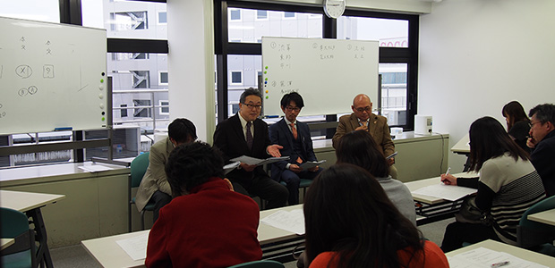
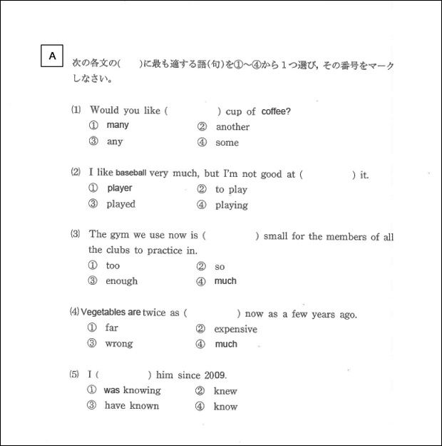
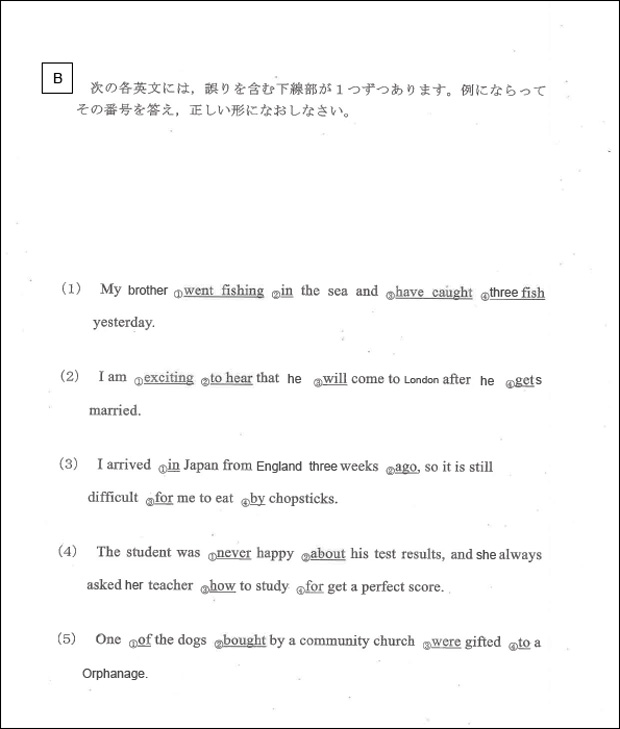
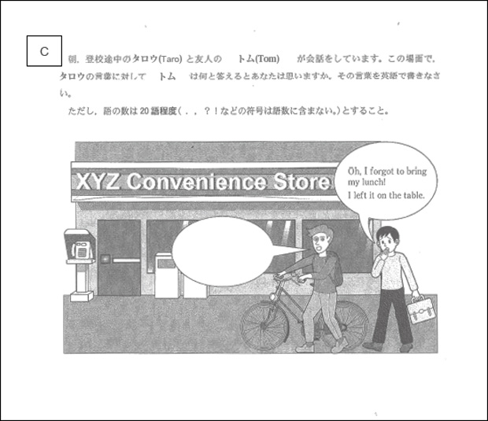

先日の月イチお話会、とても楽しく盛り上がりました。 とかく重苦しくなりがちな「入試」というテーマにもかかわらず、まるで晴れた日の朝の息吹にも似た清々しさを感じさせるものでした。 それはきっと私たち4人の講師が、誰はばかることなく本音で語ったからでしょう。本音過ぎるほどだったかも…。 私自身塾の経営者という立場では中々言えなかった「高校入試の実態」「私立高校のあり方」そういった内容に、ズバズバ切り込んで話せたこと、そしてそれらを会場の参加者の皆さんと共有できたことでとても有意義な時間だったと感じています。 質疑応答も活発で参加者の皆さんの熱意が十分伝わり良い会でした。お礼申しあげます。入試問題を比較する
さて、月イチでも触れましたが高校受験をする生徒にとって「入試」というものは日頃の勉強の成果が試されると同時に人生を左右する一大事です。 人生で初めての試練といっても良いでしょう。 一方選抜する側の高校にとっても、入試は自校にふさわしい生徒（ふさわしい学力を持っている者）を取り込む最大のチャンスであり、特にどのような試験問題を課すかは、その高校がどんな生徒に来て欲しいかを受験生や世間にアピールする手段として格好のメッセージとなります。 入試を受験生と学校（高校）の「出会いの場」と考えるなら、双方にとって悔いのない一期一会であって欲しい。 特に一生懸命勉強してきた受験生にとっては、万一受からなかったとしても納得のいくものであって欲しいと思っています。 しかし以前のブログ（⇒終わってからも大変 子どもの受験）でも指摘しましたが、一部の私立高校（偏差値も高く大量の受験生が集まる学校）には首を傾けたくなる問題を課す所があります。 今回はゴタゴタ言わず、禁を犯して実際の入試問題を掲載して皆さんの判断を仰ぎたいと思います。 以下のA高校B高校は私立、Cは県立の各々今年の英語の入試問題（一部）です。 なお問題文は一部改変しました。



いかがでしょうか。いずれも平易な問題です。 A高校とB高校の問題は文法問題で一見同じくらい易しく感じますが、良く見るとA高校のは文章を読まなくてもできる問題です。 典型的なパターンにあてはめるだけのモノ。 要するに何も考えず解けてしまう。よくある問題集の初級レベルで、もしかしたら実際にその種の問題文をコピーしただけとも思えます。 一生懸命勉強して来た者とそうでない者の差は見られないだろうと思います。 その点B高校のは、簡単といっても正誤を問うので答えるのに一応の根拠が必要です。 さすがに文章を読まずに答えることはできません。 易しいながらも一定の英語力は必要という意味で良問と言えるでしょう。 一方Cは県立で、自分で考えてセリフを英語で書かなくてはなりません。受験生にとってかなり高いハードルです。 これは状況を把握する力と英作文力という一段高い視点からの回答能力が求められる点で、受験生の力を総合的に見ようという出題者の意図が感じられます。 しかも採点には相当の労力がかかるでしょう。 これらを見る限り意外にも、私立より県立の入試問題の方が受験生の学力を多角的に判定しようとしている。丁寧に作られ、練られているということが分かります。 受験生の親御さんたちは恐らくこのような実情をご存じないのかも知れません。 ひとつの参考にしていただけたらと思います。 さて高校入試もいよいよ県立後期を残すのみとなりました。 受験生の皆さん最後まで決してあきらめず頑張ってください。 上で見たように県立の問題は手強いけど、それはむしろ「自分の力をちゃんと見てくれる」証拠です。心を込めて答案用紙と向き合いましょう。